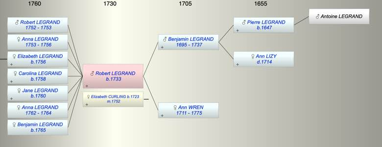

| [Index] |
| Robert LEGRAND (1733 - ) |
|  |
| b. 1733 at Canterbury |
| m. 07 Oct 1752 Elizabeth CURLING (1723 - ) |
| Parents: |
| Benjamin LEGRAND (1695 - 1737) |
| Ann WREN (1711 - 1775) |
| Siblings (3): |
| Ann LEGRAND |
| William LEGRAND |
| George LEGRAND (1730 - ) |
| Grandchildren (3): |
| Euphemia Jane HUNTER (1786 - ), Archibald Henry HUNTER (1791 - ), Caroline Sophia HUNTER (1795 - 1822) |
| Events in Robert LEGRAND (1733 - )'s life | |||||
| Date | Age | Event | Place | Notes | Src |
| 1733 | Robert LEGRAND was born | Canterbury | Note 1 | ||
| Oct 1737 | 4 | Death of father Benjamin LEGRAND (aged 42) | |||
| 1752 | 19 | Birth of son Robert LEGRAND | Barham | Note 2 | |
| 07 Oct 1752 | 19 | Married Elizabeth CURLING (aged 29) | Note 3 | ||
| 1753 | 20 | Birth of daughter Anna Maria LEGRAND | Barham | Note 4 | |
| 15 Jun 1753 | 20 | Death of son Robert LEGRAND (aged 1) | Barham | Note 5 | |
| 1756 | 23 | Birth of daughter Elizabeth LEGRAND | Barham | Note 6 | |
| 10 May 1756 | 23 | Death of daughter Anna Maria LEGRAND (aged 3) | Barham | Note 7 | |
| 1758 | 25 | Birth of daughter Carolina Susannah LEGRAND | Ash | Note 8 | |
| 1760 | 27 | Birth of daughter Jane LEGRAND | Ash | Note 9 | |
| 1762 | 29 | Birth of daughter Anna Margaretta LEGRAND | Ash | Note 10 | |
| 1764 | 31 | Death of daughter Anna Margaretta LEGRAND (aged 2) | Barham | Note 11 | |
| 1765 | 32 | Birth of daughter Benjamin John Agaie LEGRAND | Ash | Note 12 | |
| 06 Sep 1775 | 42 | Death of mother Ann WREN (aged 64) | aged 64 | ||
| Personal Notes: |
|
For good details of his family see http://www.myjacobfamily.com/pedigrees/legrandpedigree.htm and this gives the children of Robert and Elizabeth Curling as:
1 Benjamin, dsp. 2 Elizabeth, who married a Dr Hunter, of London. 3 Carolina Susanna, who married Patrick Shepherd ( it is more likely to be William Shepperd - the marriage was at Ash, Kent 5 Dec 1778 see FMP) 4 Jane, who married William Lambert. They had children William, John and Jane. 5 Robert. 6 Anna Maria, who died in 1756. |
| Created on a Mac™ using iFamily for Mac™ on 8 Oct 2023 |